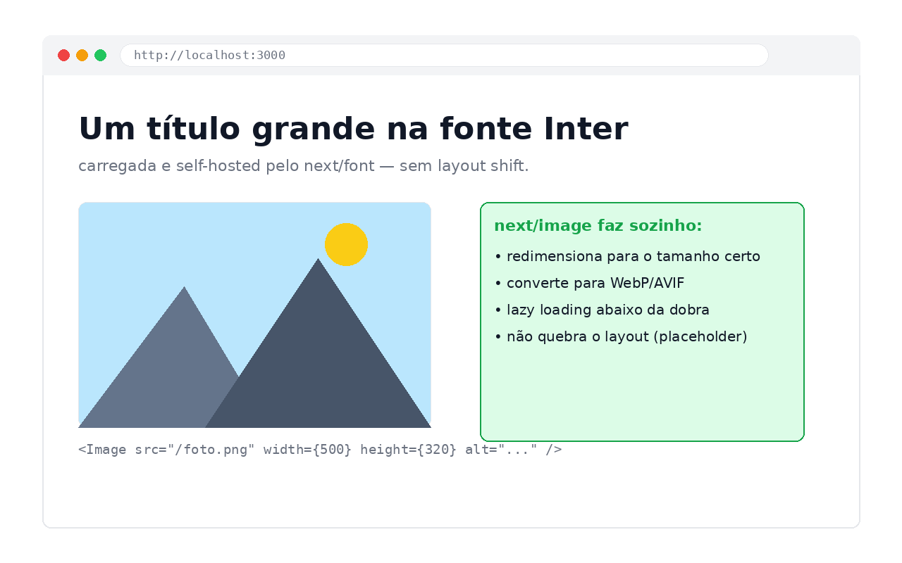

Fontes e imagens
A página da Ana já tem conteúdo e estilo, mas as fontes carregam da internet (e a página "pula" quando a fonte chega) e as imagens estão pesadas demais. O Next.js tem dois componentes专门 para isso: o next/font (fontes otimizadas, baixadas no build e servidas do próprio servidor) e o next/image (imagens que o Next redimensiona, converte para WebP e carrega só quando aparecem na tela).
next/font/google: fonte self-hosted automática, sem layout shift, comvariableno CSSnext/image:src,width,height,altobrigatórios- O que o
<Image>faz sozinho: WebP/AVIF, lazy loading, tamanho certo - Imagens de fora do domínio: configurar
remotePatternsno next.config - Erros reais: Image sem width/height
A ideia: fonte é entrega em mãos, imagem é correio otimizado
Quando você usa uma fonte do Google via <link>, o navegador precisa ir até o Google, baixar a fonte, e só depois pintar o texto — e enquanto isso o texto aparece com a fonte padrão e depois "pula" para a fonte nova. Esse pulo chama-se layout shift e é péssimo para o usuário e para o Google. O next/font resolve isso de um jeito elegante: no momento do build (npm run build ou ao subir o dev), o Next.js baixa a fonte do Google, salva ela no seu próprio servidor e gera um CSS com @font-face apontando para os arquivos locais. Resultado: a fonte já está no seu servidor, não existe segunda viagem, não existe pulo — o texto já nasce com a fonte certa.
A imagem é como um correio: se a Ana manda uma caixa de 5kg para alguém que só precisava de 200g, é desperdício. A tag <img> comum manda o arquivo original, seja qual for o tamanho — uma foto de 4MB num celular. O <Image> do Next.js é o correio otimizado: ele olha o tamanho que a imagem vai ocupar na tela, redimensiona na hora, converte para WebP/AVIF (formato mais leve), e só baixa a imagem quando ela está prestes a aparecer na tela (lazy loading). Você declara width e height — o Next usa esses números para reservar o espaço exato antes da imagem chegar, então a página não pula quando a foto carrega.
Fonte com next/font/google
import "./globals.css";
import { Inter } from "next/font/google";
const inter = Inter({ subsets: ["latin"] });
export const metadata = { title: "Meu App da Ana" };
export default function RootLayout({ children }) {
return (
<html lang="pt-BR" className={inter.className}>
<body>{children}</body>
</html>
);
}
O inter.className coloca a fonte no <html> inteiro. Se quiser uma fonte só para títulos, dá para usar variable: "--fonte-titulo" e aplicar style={{ fontFamily: "var(--fonte-titulo)" }} onde quiser. Zero layout shift.
Imagem com next/image
Coloque a imagem em public/ (ex.: public/foto.png) e use:
import Image from "next/image";
export default function Home() {
return (
<main>
<h1>Minha foto</h1>
<Image src="/foto.png" width={500} height={320} alt="Foto da Ana no parque" />
</main>
);
}
width e height são obrigatórios (exceto quando usa fill) justamente para o Next.js reservar o espaço e evitar o pulo de layout. O alt é obrigatório por acessibilidade. Se a imagem vier de outro site (Unsplash, etc.), é preciso liberar o domínio em next.config.mjs:
const nextConfig = {
images: {
remotePatterns: [{ protocol: "https", hostname: "images.unsplash.com" }],
},
};
export default nextConfig;

next/font (título na Inter, sem pulo) e next/image (imagem redimensionada e em lazy loading).| Prop | Obrigatória? | Pra que serve |
|---|---|---|
src | ✅ | Caminho da imagem (/foto.png de public/) ou URL externa liberada |
width / height | ✅ (ou fill) | Reserva o espaço e define o redimensionamento — evita layout shift |
alt | ✅ | Texto alternativo (acessibilidade + SEO) |
fill | alternativa | Ocupa o container relativo (substitui width/height) |
priority | não | Carrega junto com a página (use no logo/hero, sem lazy) |
Quando dá errado
<Image> sem width/height e o Next.js recusou:Error: Image with src "/foto.png" is missing required "width" property.
Dica do guia: o <Image> exige width e height (números, em px) — é assim que
ele reserva o espaço e evita o pulo de layout. Ex.:
<Image src="/foto.png" width={500} height={320} alt="..." />
Error: Invalid src prop (https://images.unsplash.com/...) on `next/image`:
hostname "images.unsplash.com" is not configured under images in next.config
Dica do guia: libere o domínio em next.config.mjs:
images: { remotePatterns: [{ protocol: "https", hostname: "images.unsplash.com" }] }
Exercícios
1. Qual componente do Next.js otimiza imagens (WebP, lazy, tamanho certo)?
2. O que o next/font/google faz que um <link> do Google Fonts não faz?
Exercício 1
Além de src e alt, quais props de tamanho o <Image> exige? Escreva uma delas: